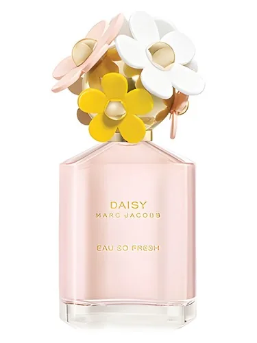

Daisy Eau So Fresh
- Para mujer
- Familia frutal
- Lanzado en 2011
Con caja$1,850Te lo conseguimos en 2 días a 1 semanaSin caja$850Te lo conseguimos en 2 días a 1 semana
No disponible: te lo conseguimos en 2 días a 1 semana
Cómo huele
Frutal
Dulce
Verde
Floral
Violeta
Sus notas
Salida
notas verdesframbuesaperatoronja
Corazón
violetalichiflor de manzanorosajazmín
Fondo
almizcleciruelacedro de Virginia
Daisy Eau So Fresh de Marc Jacobs es un perfume frutal para mujer, lanzado en 2011. Abre con notas verdes y frambuesa, en el corazón tiene violeta y lichi y deja un fondo de almizcle y ciruela. Lo que más se siente: frutal, dulce y verde.